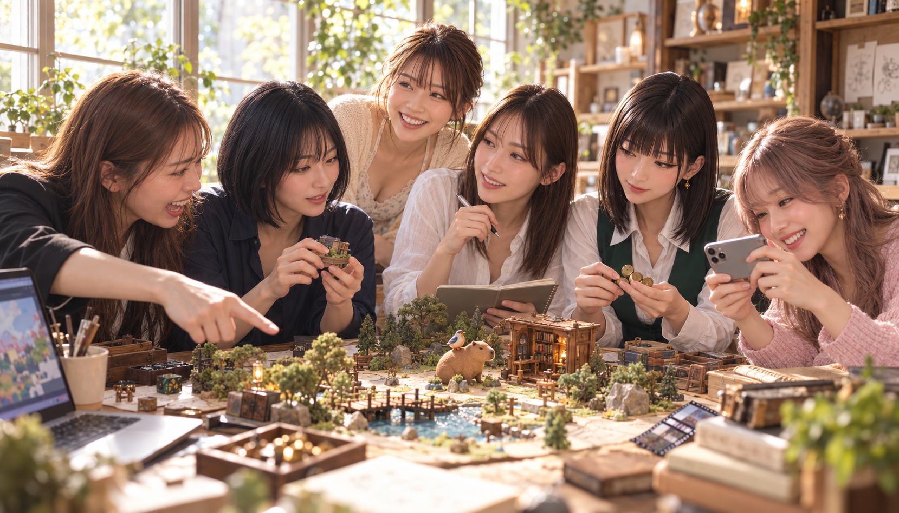
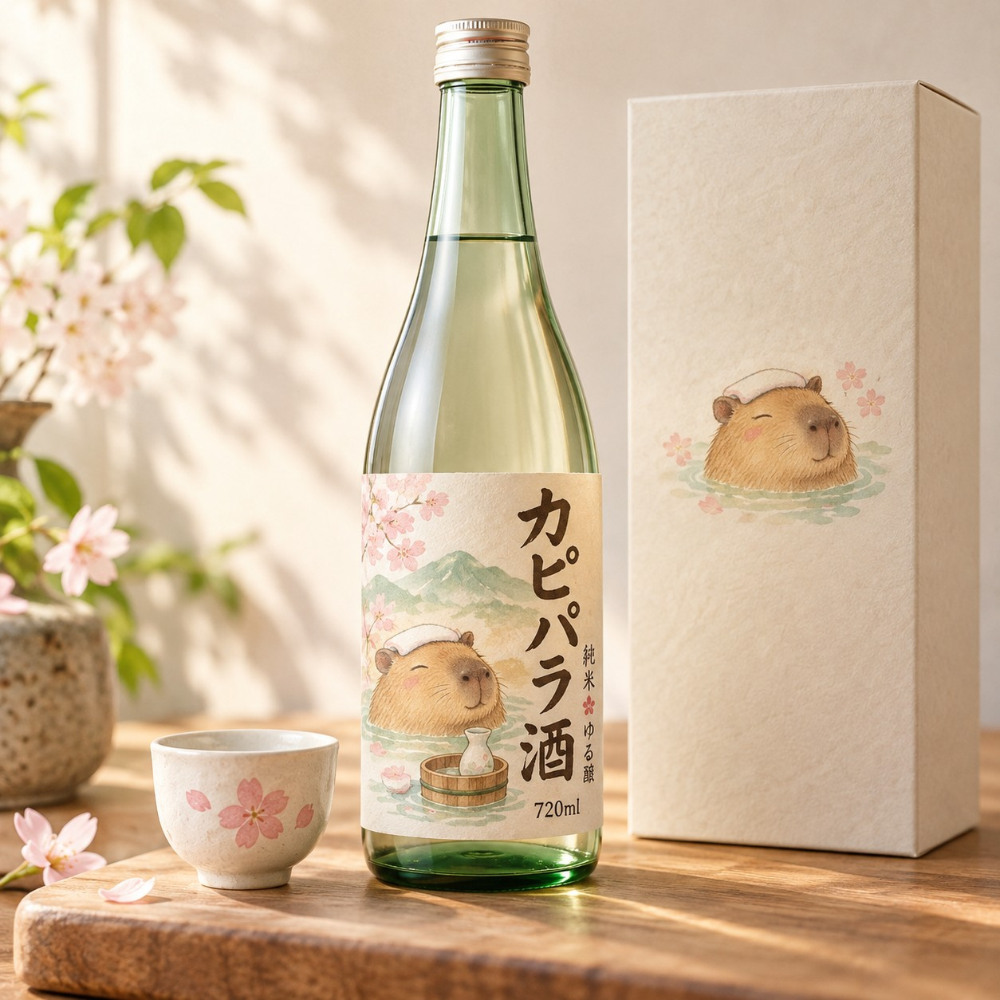

2026.10.01 ／ DEV DAY SIDE QUESTS
今日はゲームの
1日にしましょう。
おけ森の作品棚から「これで遊べるかも」を選び、ひとつの作品を実際に触って、見てもらえる形へ。おけ酒を題材にした今回の道のりと、次の一歩をまとめました。
作品ができた時点と、課題の応募が済んだ時点は別々です。ここでは、その間に何をしたかも一緒に見ていきます。

RIGHT NOW
いまの状態
公式画面を2026年10月1日に読み返した時点の記録です。提出・進捗・抽選券の受け取りを分けています。
OFFICIAL QUEST STATUS
Side Quests complete
ChatGPT Sites：submitted
- 公式へ提出したリンク
- Post link Live Site URL
- 抽選券の状態
- Your tickets：1/5 claimed · 0 ready to claim
抽選券は1枚受け取り済みです。
応募要件の審査結果・当選は未確認です。次は、新しい課題候補を選びます。
FROM IDEA TO ENTRY
作るところから、
受け取るところまで。
作品づくり、動画の公開、公式への提出、抽選券の受け取り。ひとつずつ別の扉を通ります。各番号を押すと、その場面が開きます。
「おけ酒も個人的にはすきだけどね🤣」おけ酒の25秒動画を見る ↗
— おけちゃんのひとこと
番号ボタンが使えない環境でも、右側の各項目を開けば全工程を読めます。
01公式ページとルールを先に確認する
02作品棚から、使えそうなものを選ぶ
今回は、前から育てていたおけ酒のページを選びました。新しいものをゼロから作る代わりに、すでにある作品へ今回の課題に合う体験を足せるか考えます。
03触ってもらいやすいように整える
瓶の裏を見つけてノックしたくなるように調整し、パソコンとスマホの両方で操作を確かめました。作品を整えたら、公開されているページが意図どおり動くかもう一度見ます。
04実際の体験を25秒の動画にする
動画には公開Siteを操作するところを入れました。瓶の裏をノックすると研究員が起きて「ばれたーー！」。画面だけでなく、どんな反応が返るかまで短く見せています。
05レビューを受けて、文と表示を読み返す
Astraに見せ方を確認し、Geminiで日本語を読み返しました。AIの提案をそのまま採用するのではなく、実際に起きた動きや公式の条件と合っているかを人が確かめてから進めます。
06条件を書いて、SNSに公開する
X・Threads・Instagram・Facebook・LinkedIn・Substackの6媒体へ広く共有しました。応募に使う公開投稿はX・Threads・Instagram・LinkedInのいずれかで、今回はX投稿を公式へ提出しています。FacebookとSubstackにも横展開しています。noteは本人確認待ちの下書き、リベッター用の公開文は削除してマイチャットへ保存しています。
応募に使う公開投稿は、動画内と投稿本文の見える位置に、懸賞応募で賞品が当たる可能性があることを明記します。投稿本文に #OpenAISideQuest を付けます。同じ課題の投稿を複数のSNSへ載せても、応募口数は増えません。
07公開した投稿と作品のURLを公式へ提出する
投稿を公開することと、公式へURLを提出することは別の手順です。公式フォームへ必要なURLを送ったあと、提出内容をもう一度開き、対象課題とリンクを読み返します。
08対象になった抽選券を、公式画面で受け取る
課題の提出と抽選券の受け取りは別の手順です。公式画面に「Claim your ticket」が表示されたら、本人が受け取り操作をし、claimed表示まで確かめます。
THE EXAMPLE
おけ酒は、こんな体験です。

A TINY SECRET DOOR
瓶の裏をノックすると、
研究員が起きる。
Blenderで作った架空の酒瓶と部屋に、AIで生成したカピバラ研究員が登場します。裏側をノックすると「ばれたーー！」と驚いて、言い訳を始める遊びです。
これは架空のお酒を題材にした作品です。実物の販売や決済はありません。
25秒の操作動画を見る ↗ 公開中の作品ページ ↗A FEW RULES THAT MATTER
応募の数え方は、意外とシンプル。
一つの課題を何回投稿したかではなく、いくつの異なる課題を完了したかで応募口数が決まります。
課題ひとつにつき、応募は1口
10種類の課題から異なるものを最大5つまで。1つだけの応募でも参加できます。同じSites作品をSNSへ何度載せても、Sitesの口数は1口のままです。
抽選は5名。作品の人気で決まらない
有効な応募口を対象に、無作為で5名が選ばれます。応募口ごとの重みは同じで、作品の質、いいね数、有料プランで優遇されません。課題数に応じて応募口数は変わります。
全10種類の課題と、公式のFree / Paid区分
区分は公式ページの表記です。Ultrafastは30秒未満、それ以外は15〜30秒の動画課題です。
- UltrafastPaid
- ProfileFree
- DotsPaid
- Project LibraryFree
- SpacesPaid
- Codex CLI SetupFree
- ChatGPT SitesPaid
- 3D ModelsFree
- CloudPaid
- PluginsFree
WHAT COULD COME NEXT?
次の寄り道は、作品棚から。
ここから先は候補です。Libraryを先に見て、ほかは使える機能と素材がそろったものを選びます。5つを埋めるために急がなくて大丈夫。
Project Library Free · 15〜30秒
第一候補：すでにある作品を、見つけやすく並べる
作品棚から代表作をひとつ選び、公式の専用プロンプトで新しい棚の画像を作ります。動画では、棚を見せてから代表作を15〜30秒で紹介します。
まず課題ページの最新条件と専用プロンプトを確かめて、今の作品棚に合うか試します。
Codex CLI Setup Free · 15〜30秒
使いどころが見つかったら、手順ごと映す
設定を見せ、便利な機能やワークフローをひとつ実演します。操作と結果を15〜30秒で紹介します。
Share your Profile Free · 15〜30秒
今の公式機能と、見せてよい情報を確かめてから
ChatGPTの公式プロフィールやUsage Highlightsに意外な数字が出るかを見る候補です。現在使える機能か、画面に個人情報が出ないかを確認してから決めます。
3D Models Free · 15〜30秒
おけ酒の3D制作を、別の課題として見せられるか
今回のSites動画とは別に、制作過程・プロンプト・モデルの回転・結果を同じ15〜30秒の動画に収める案です。今回のBlender制作が公式課題の生成経路に合うか、対象機能を確認してから採用します。